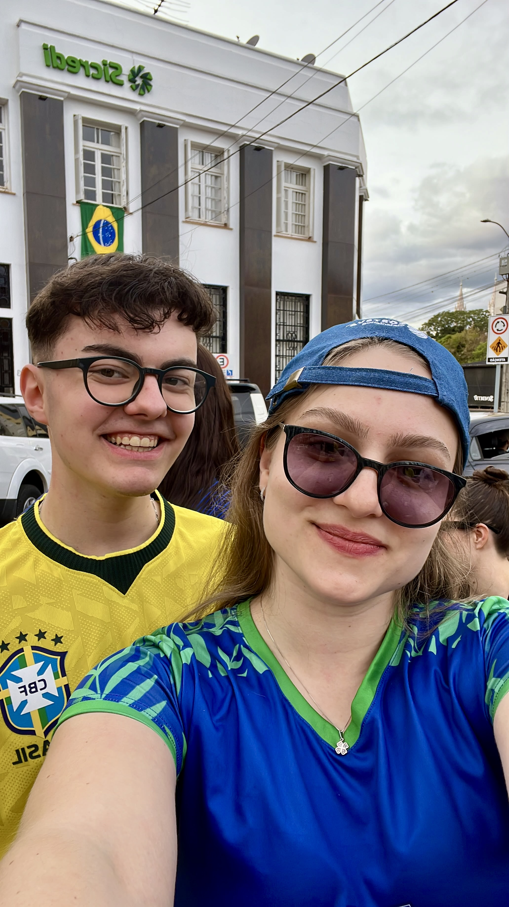

Criatividade • Estratégia • Comunicação
Ideias que comunicam. Criatividade que conecta.
Conheça meu trabalho.JPEG)
Quem sou eu?
Muito além de uma tela.
Meu nome é Tobias João Tabolca Fontanive, tenho 18 anos e sou estudante do curso Técnico em Manutenção e Suporte em Informática integrado ao Ensino Médio, no IFRS – Campus Sertão.
Minha trajetória reúne diferentes paixões: comunicação, publicidade, design gráfico, tecnologia e organização de eventos. Gosto de explorar ideias, desenvolver projetos e encontrar maneiras criativas de transmitir mensagens.
Atuo na criação de conteúdos para redes sociais, desenvolvimento de materiais gráficos, identidades visuais e comunicação de projetos e iniciativas. Cada experiência contribui para construir minha visão sobre o universo da publicidade e do marketing digital.
Mais do que criar algo visualmente bonito, acredito que a comunicação precisa ter propósito, transmitir personalidade e gerar conexões verdadeiras.
O que eu faço?
Onde criatividade, estratégia e tecnologia se encontram.
Social Media
Planejamento e criação de conteúdos estratégicos para fortalecer marcas nas redes sociais.
Design Gráfico
Criação de peças digitais, materiais publicitários e soluções visuais criativas.
Identidade Visual
Desenvolvimento de identidades que representam a essência e a personalidade de cada marca.
Produção de Conteúdo
Edição de vídeos, Reels, campanhas publicitárias e materiais para comunicação digital.
Experiências que constroem minha trajetória.
Ao longo da minha formação, participei de projetos acadêmicos, iniciativas sociais, atividades culturais e eventos que fortaleceram minhas habilidades de liderança, criatividade e comunicação.
Entre essas experiências, destaco minha participação no Projeto E-Lixo, do IFRS – Campus Sertão, no desenvolvimento de materiais de comunicação e na organização de eventos como o Shark Tank TMSI.
Também desenvolvo trabalhos de comunicação digital e criação de conteúdos para diferentes públicos, buscando sempre unir estética, informação e estratégia.
.PNG)
Habilidades e ferramentas
Habilidades criativas
- Design gráfico e identidade visual
- Criação e planejamento de conteúdo
- Comunicação e escrita criativa
- Marketing e estratégias digitais
- Organização e divulgação de eventos
- Oratória e trabalho em equipe
Ferramentas e tecnologias
- Pacote Office
- Pacote Adobe
- Pacote Apple Creators
- CapCut
- Canva
- HTML, CSS e Bootstrap
.JPEG)
Além do digital, muitas histórias.
Minha personalidade também é construída pelas experiências que vivo fora das telas. Faço parte do CTG Getúlio Vargas, participo de atividades culturais e estou envolvido em iniciativas comunitárias e religiosas.
Gosto de organizar eventos, conhecer pessoas, explorar novas ideias e transformar momentos em experiências especiais.
Acredito que todas essas vivências ampliam meu olhar criativo e contribuem para a forma como me comunico, desenvolvo projetos e conto histórias.
Alguns registros da minha trajetória
Diferentes momentos, experiências e versões de quem sou.
.JPEG)
.JPEG)
.JPEG)
.JPEG)

.JPEG)
.JPEG)
.JPEG)
.JPEG)
.JPEG)
Contato • Parcerias • Projetos
Vamos criar algo incrível juntos?
Toda grande ideia começa com uma conversa. Conte-me sobre seu projeto.
Conte-me sobre seu projeto
Demonstração de formulário com validação e confirmação na própria página.